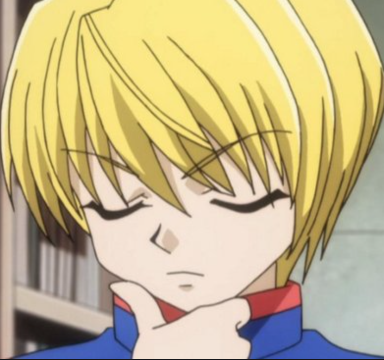
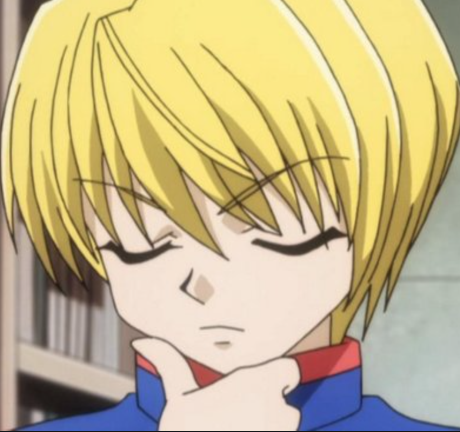

Kurapika
Kurapika (クラピカ, Kurapika) is the last survivor of the Kurta Clan. He is a Blacklist Hunter and the current leader of the organization founded by Light Nostrade. He is a member of the Zodiacs with the codename "Rat" (子ね, Ne). His goal is to avenge his clan and recover the remaining Scarlet Eyes.


 

- Leorio
- Leorio Paradinight (レオリオ=パラディナ) is a rookie Hunter, and he is currently a medical student. He is also a member of the Zodiacs with the codename "Boar". He is part of the Science Division, created in preparation for the voyage to the Dark Continent.
- Gon
- Gon Freecss is the main protagonist of Hunter × Hunter and best friend of Killua Zoldyck. His main goal is to find his father Ging Freecss who is said to be the best Hunter in the world. Japanese: ゴン=フリークス
- Killua
- Killua Zoldyck (キルア゠ゾルディック, Kirua Zorudikku) is the third child of Silva and Kikyo Zoldyck and the heir of the Zoldyck Family, until he runs away from home and becomes a Rookie Hunter. He is the best friend of Gon Freecss, and is currently traveling with Alluka Zoldyck.
- Melony
- Melody (センリツ, Senritsu) is a Music Hunter and one of Neon Nostrade's bodyguards.[1] She is currently a bodyguard of Prince Kacho Hui Guo Rou.[2]
Sourse: Hunter x Hunter wiki
| Firstname | Lastname | Age |
|---|---|---|
| Jill | Smith | 50 |
| Eve | Jackson | 94 |